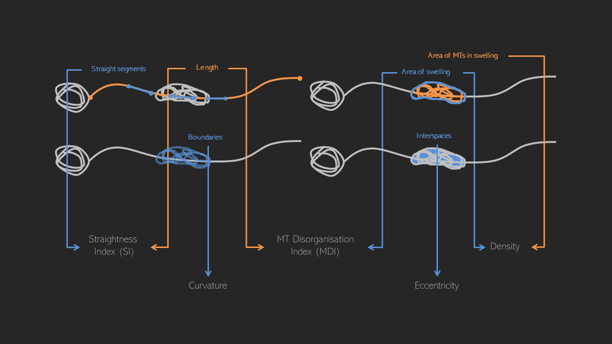

ALFRED
Advanced Labelling Fitting Recognition and Enhancement of Data
With the intention of having a complete and semi-automated pipeline to analyse the biological images in the group, I've developed ALFRED.
However, ALFRED can open different types of images and will process them, returning to the user some quantitative parameters, such as curvature, straightness and length.

There is a demonstration video available to see how it works.
The software will be available to the public soon but until then, please email me any queries you may have.